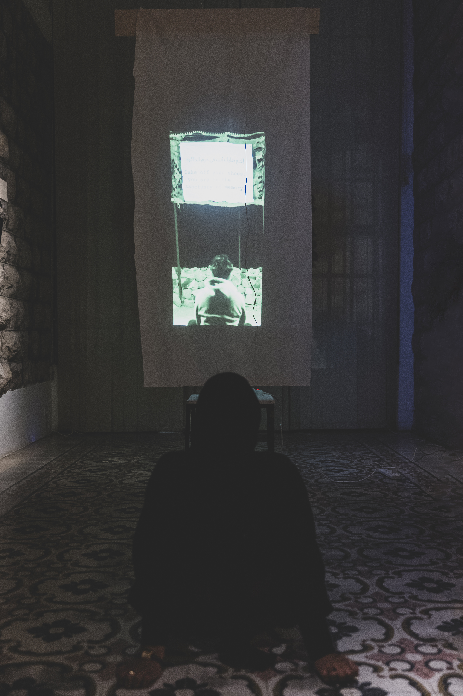

A mixed-media installation reflecting on themes of absence, longing, and the remnants of loss. The piece includes a 45-second video featuring my mother singing and speaking about death and losing my father, alongside photo transfers and cyanotypes created during a 10-day residency in Wadi Rum, Jordan.
Tracing Absence


01 / 02